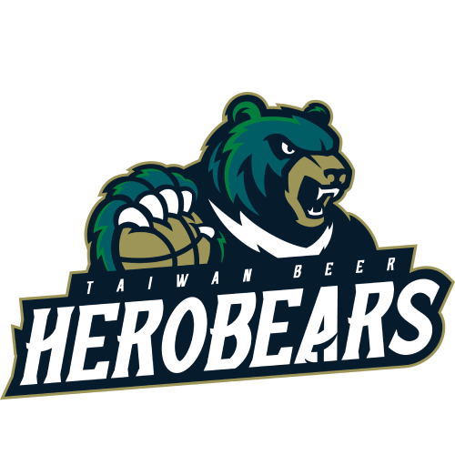
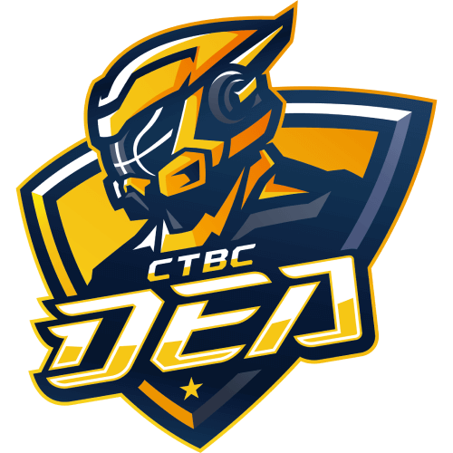
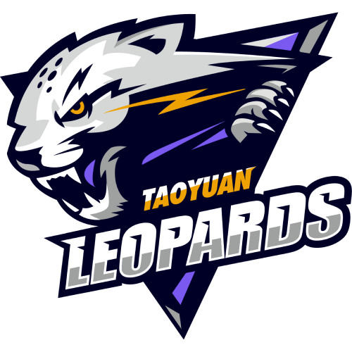
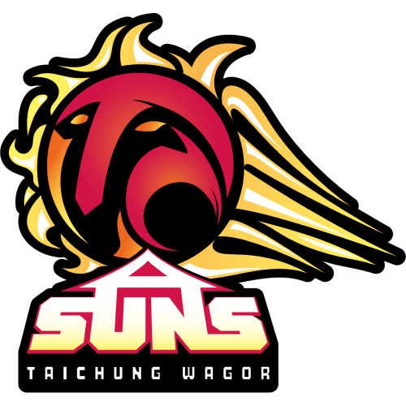
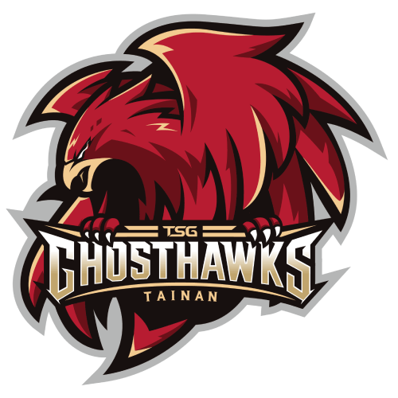

台灣啤酒英熊
TaiwanBeer HeroBears
從公賣凱旋青年隊到1968年正式成立公賣金龍隊，並於1999年改名為台灣啤酒籃球隊，在2003年成為SBL超級籃球聯賽創始元老。
SBL時期台啤共拿下六座冠軍為歷史最多冠軍球隊之一。於2021年9月2日，正式宣佈以「台灣啤酒英熊隊」加入T1 League。
台灣啤酒英熊隊將於2021-22賽季，以「不留一手」為宣傳主軸，取自六罐通稱為「一手」以及啤酒與六冠諧音，誓言征戰第七座總冠軍。
新北中信特攻

新北中信特攻籃球隊於2021年七月正式成立，組建首年目標是打造震撼臺灣籃壇的新黃金世代。中信特攻的「特攻精神」強調「團隊合作、無所畏懼、使命必達」，球隊將透過球場上極具感染力的精彩表現，吸引年輕族群認同支持，進而推廣「反毒」的球隊核心理念！2021-2022賽季，中信特攻主打口號「領北狂攻」，將帶領新北人一起守護主場，朝總冠軍榮耀邁進！
桃園雲豹

桃園雲豹是由雲豹能源召集一群台灣新創團隊集合體一同支持的球隊，包括台灣再生能源整合「雲豹能源」、人工智慧新創「諦諾智金」、區塊鏈科技投創「紅樓資本」、推動新創產業發展的「成就投創」、行車智慧支付「車麻吉」、致力開發原創IP的「雷亞遊戲」以及培育具創業思維與領導力人才的「炙星投創」。我們期許能將自身對於科技創新的熱情投入職籃運動，打造精準、迅速、有耐心的球隊。
臺中葳格太陽

臺中豔陽高照，烈日當空，未來這一支以太陽為名，以臺中為地的隊伍，將會自帶光芒成為敵對者的刺眼存在。對於球迷，它是無窮能量的化身。對於挑戰者，它會是難以接近的敬畏。對於大環境，它會以光和熱趕走黑暗時刻。自此臺中太陽將帶領中部籃球邁向全新紀元。
概念源於大自然中最具正面能量的太陽，其無法直視的輪廓將成為最耀眼的存在，新賽季臺中太陽將毫不保留同時也「耀你好看」！
臺南台鋼獵鷹

臺南台鋼獵鷹籃球隊正式成軍於2021年，元年目標以深耕在地為核心，由台鋼集團冠名職業籃球隊，長達5+5年的承諾展現了在地深耕、培養籃球人才的決心。 結合市徽磚紅色、金色及黑色．象徵溫暖、熱情、樸實的台南特色。融入球隊精神標語「All in」，將身為臺南人不屈不撓的真性格表露無遺！展現拚搏到底的鋼鐵意志力，肩負最高遠的自我期許，一球一球擊退勁敵，致敬這座城市對球隊的期許與肯定！
 以掌管海洋一切事物的神祇「海神」作為隊名，傳達球隊以海洋為根基，主宰台灣職業籃球的決心。海不只是生命源頭，更是推動這座城市前進的動力，自廣闊、包容性極強的海洋汲取靈感，海神的英文隊名 AQUAS 由此而生。
由國揚集團主導成立，高雄海神職業籃球隊將以深耕在地、建立南台灣的籃球文化為首要目標，同時結合在地學生籃球體系、從下到上垂直整合並持續深化發展，進而建立在地凝聚力。 除了籃球運動的發展，高雄海神更希望球隊不只能成為在地鄉親和南部囝仔的驕傲，同時也能認同海神所打造的文化，這才是海神對於這塊土地最好的認同與回饋。
以掌管海洋一切事物的神祇「海神」作為隊名，傳達球隊以海洋為根基，主宰台灣職業籃球的決心。海不只是生命源頭，更是推動這座城市前進的動力，自廣闊、包容性極強的海洋汲取靈感，海神的英文隊名 AQUAS 由此而生。
由國揚集團主導成立，高雄海神職業籃球隊將以深耕在地、建立南台灣的籃球文化為首要目標，同時結合在地學生籃球體系、從下到上垂直整合並持續深化發展，進而建立在地凝聚力。 除了籃球運動的發展，高雄海神更希望球隊不只能成為在地鄉親和南部囝仔的驕傲，同時也能認同海神所打造的文化，這才是海神對於這塊土地最好的認同與回饋。
高雄全家海神
以掌管海洋一切事物的神祇「海神」作為隊名，傳達球隊以海洋為根基，主宰台灣職業籃球的決心。海不只是生命源頭，更是推動這座城市前進的動力，自廣闊、包容性極強的海洋汲取靈感，海神的英文隊名 AQUAS 由此而生。
由國揚集團主導成立，高雄海神職業籃球隊將以深耕在地、建立南台灣的籃球文化為首要目標，同時結合在地學生籃球體系、從下到上垂直整合並持續深化發展，進而建立在地凝聚力。 除了籃球運動的發展，高雄海神更希望球隊不只能成為在地鄉親和南部囝仔的驕傲，同時也能認同海神所打造的文化，這才是海神對於這塊土地最好的認同與回饋。